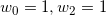

w1
t
prikaži
Konike
kontrolne točke težine
racionalna kvadratna forma konike
✏ Za  težine daju istu krivulju kao i početne težine .
težine daju istu krivulju kao i početne težine .
✏ Graf krivulje c se ne mijenja pri zamjeni težina za neki  .
.
✏ Ako uzmemo (uz uvjet ), dolazimo do standardne forme konike.
Standardna forma konike 
Komplementarni dio konike
✏ Točke su kolinearne točke za svaki  .
.
Klasifikacija
✏ Ako je , tada je krivulja c dio elipse.
✏ Ako je , tada je krivulja c dio parabole.
✏ Ako je , tada je krivulja c dio hiperbole.